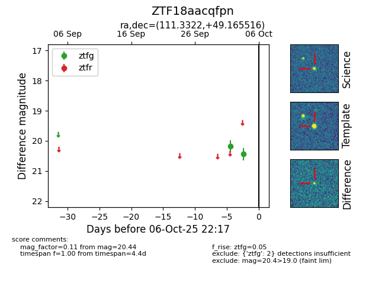

FINK: ZTF18aacqfpn
Lasair: ZTF18aacqfpn
ALeRCE: ZTF18aacqfpn
ZTF18aacqfpn (ztf,fink)
equatorial (ra, dec) = (111.3322,+49.16552)
galactic (l, b) = (168.7087,+25.51454)

last ztfg=20.44
2 ztfg detections